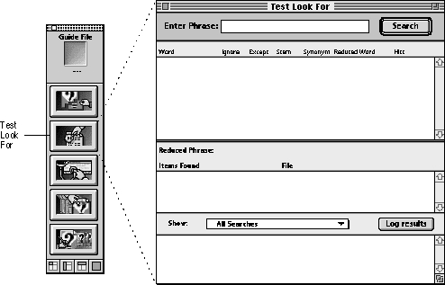
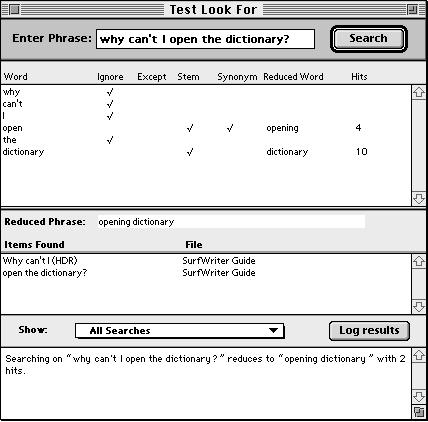

Legacy Document
Important: The information in this document is obsolete and should not be used for new development.
Important: The information in this document is obsolete and should not be used for new development.


Testing Your Look For Content
When a user enters a search phrase in the Look For window and clicks Search, Apple Guide parses this phrase and tries to match it with an index term in the guide file. To enhance Apple Guide's searching facility, in addition to index terms you can provide Look For content that Apple Guide uses as it parses the phrase. This section describes how you can test whether a search phrase matches up with the appropriate index term in your guide file.For information on how to design your Look For content, see the chapter "Planning Your Help Content."
To test a guide file's Look For content, use Guide Maker's Test Look For utility. Figure 6-3 shows the Test Look For window.
Figure 6-3 The Test Look For window

Enter the phrase to search for in the Enter Phrase text box and then either click the Search button or press the Enter key. Figure 6-4 shows the results of entering a phrase in the Test Look For window.
Figure 6-4 A parsed phrase in the Test Look For window

As you can see from Figure 6-4, Guide Maker reports the following for each word:
Guide Maker then checks whether the phrase as parsed so far is a synonym, and if so, it puts a check in the Synonym column and also puts the associated word or phrase in the Reduced Word column. Using the example shown in Figure 6-4, the phrase as parsed at this point is "open dictionary". This phrase is not in the synonym list. (If the phrase is in the synonym list, Guide Maker checks the index for the parsed phrase and, if it finds a matching index term, displays the results in the Items Found column and displays "n/a" in the Hits column [see Figure 6-5].)
- Whether it is on the ignore list. (If so, it puts a check in the Ignore column.)
- Whether it is on the exception list. (If so, it puts a check in the Except column.)
- Whether it is eligible for stemming. (If so, it puts a check in the Stem column.) Note that a check in the Stem column does not necessarily mean the word was stemmed.
If Guide Maker does not find the initial parsed phrase in the synonym list, it reports the following for each word:
Guide Maker displays the resulting phrase in the Reduced Phrase area, checks the index for this phrase ("opening dictionary" in this example), and displays the results in the Items Found column. If it doesn't find the reduced phrase in the index, it also reports the following for each word:
- Whether it is a synonym for another word or phrase. (If so, it puts a check in the Synonym column.)
- The resulting word after it was parsed. (It displays it in the Reduced Word column.)
Guide Maker then displays in the Items Found column the intersection of the words in the reduced phrase. In the example shown in Figure 6-4, Guide Maker displays the intersection of "opening" and "dictionary".
- Whether the index contains a matching index term for the word. (If so, it displays the number of headers and topics associated with the matched index term in the Hits column.)
Figure 6-5 shows another example of how Guide Maker parses a search phrase. As shown in this example, "site dictionary" is a synonym for "dictionary". "Dictionary" is an index term, and thus Guide Maker displays in the Items Found column all the topics associated with the index term. Guide Maker also displays "n/a" in the Hits column when it finds a synonym for an entire phrase.
Figure 6-5 Results of a search
Guide Maker gives a summary of the search results in the Log Results area (the scrollable area near the bottom of the Test Look For window). If you select All Searches from the Show pop-up menu, Guide Maker gives a summary of the current search each time you perform a search. If you want Guide Maker to report on only selected searches, choose "Only requested searches" from the Show pop-up menu. If you choose this item, then you must click the "Log results" button when you want Guide Maker to report the summary results of a search.
As you develop and test your Look For content, if you get unexpected results, you might find it helpful to create a guide file with only a single index term in it. You can then use this guide file to determine how a word stems by default. By comparing this with the search results from the Look For content of your guide file, you may be able to more quickly troubleshoot how the search phrase is parsing.